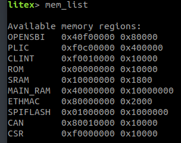

Litex Bringup
Steps to bringup CAN bus on a 32-bit RISC-V CPU on Xilinx FPGA board Arty A7-100T!
- Install prerequisite packages
sudo apt update
sudo apt upgrade
sudo apt install openocd fakeroot verilator python3 meson gtkterm gawk texinfo git python3-pip bison device-tree-compiler autoconf automake autotools-dev curl python3 libmpc-dev libmpfr-dev libgmp-dev build-essential flex gperf libtool patchutils bc zlib1g-dev libexpat-dev ninja-build
- Checkout Litex Repo.
git clone https://github.com/disdi/litex
cd litex
- Install cross-compiler toolchain for RISC-V.
python3 ./litex_setup.py --gcc=riscv
Install openxc7 or Xilinx Vivado.
- Install Litex pacakges
python3 ./litex_setup.py --dev --init
- Install litex with CAN support
python3 ./litex_setup.py --init --install --user
Apart from all litex packages ctucan_migen_wb_wrapper should also be installed.
- Current CAN Litex support is implemented on Xilinx FPGA board Arty A7-100T.
Checkout Litex Board Repo.
git clone https://github.com/disdi/litex-boards
cd litex-boards
- Build bitstream for Arty board. (Install riscv toolchain and Vivado if not already present.)
python3 litex_boards/targets/digilent_arty.py --variant=a7-100 --build
It creates a bitstream file at build/digilent_arty/gateware/digilent_arty.bit
- Connect Arty A7-100T (J10) to PC using a MicroUSB cable (power, console and programming).
Optionally connect Arty A7-100T (J9) to Switch/Router using a LAN cable and PMOD Sdcard (J10).

Load the bitstream from PC to Arty with –load option or directly using openocd.
python3 litex_boards/targets/digilent_arty.py --variant=a7-100 --load
- Open ttyUSB port to read board serial logs.
To connect to the system’s console, use the screen utility (assuming /dev/ttyUSB1 is used, below):
screen /dev/ttyUSB1 115200
Litex should bootup and mem_list should show CAN peripheral.

This should match the value of CSR register address generated by Litex.
grep "#define CSR[A-Z_]*BASE" build/digilent_arty/software/include/generated/csr.h